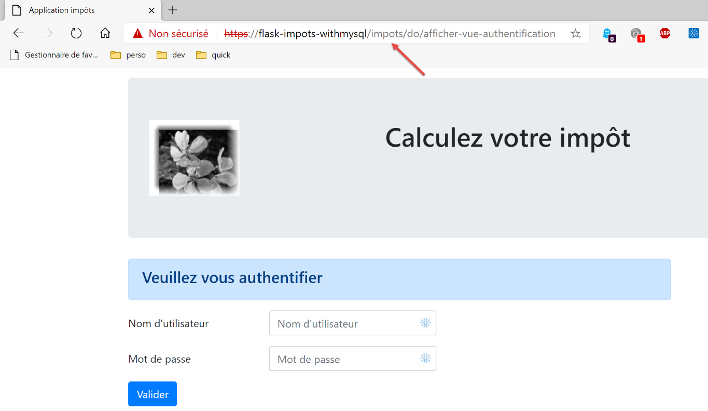
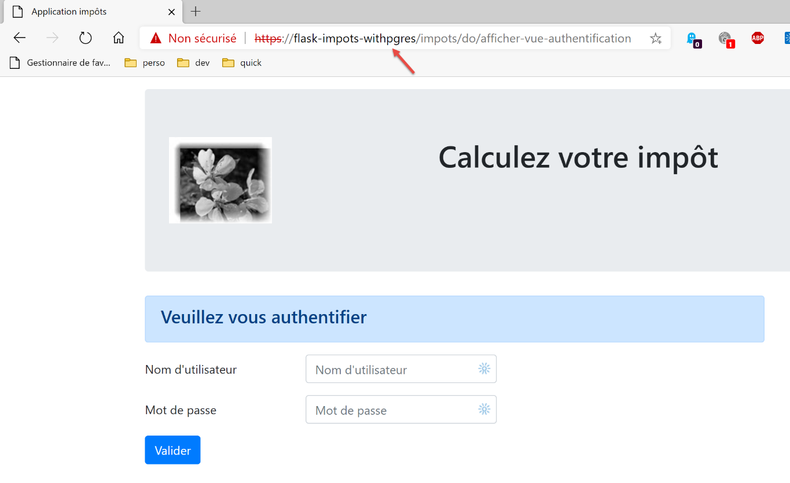

38. Practical Exercise: Version 18
38.1. Implementation

The [impots/http-servers/13] folder is initially created by copying the [impots/http-servers/12] folder and then partially modified.
We start by adding a new parameter to the [configs/parameters] file:
…
# csrf token
"with_csrftoken": False,
# supported databases MySQL (mysql), PostgreSQL (pgres)
"databases": ["mysql", "pgres"],
# application URL prefix
# set the string to empty if no prefix is desired, or use /prefix otherwise
"prefix_url": "/do",
# Apache server root URL - set to an empty string for execution outside of Apache
"application_root": "/taxes"
…
Line 10: The [application_root] parameter will represent the WSGI alias of the Apache virtual server.
With this parameter, we can correct the [responses/HtmlResponse] directive that caused the error:

…
# now we need to generate the redirect URL without forgetting the CSRF token if it is required
if config['parameters']['with_csrftoken']:
csrf_token = f"/{generate_csrf()}"
else:
csrf_token = ""
# redirect response
return redirect(f"{config['parameters']['application_root']}{config['parameters']['prefix_url']}{ads['to']}{csrf_token}")
, status.HTTP_302_FOUND
- line 9: we added the application root to the beginning of the redirect target URL;
We also need to correct all fragments so that the URLs they contain start with the application root (or WSGI alias):

The [v-authentication] fragment
<!-- HTML form - we post its values with the [authenticate-user] action -->
<form method="post" action="{{model.application_root}}{{model.prefix_url}}/authenticate-user{{model.csrf_token}}"
>
<!-- title -->
<div class="alert alert-primary" role="alert">
<h4>Please log in</h4>
</div>
…
</form>
The [v-calcul-impot] fragment
<!-- HTML form submitted -->
<form method="post" action="{{model.application_root}}{{model.prefix_url}}/calculate-tax{{model.csrf_token}}">
<!-- 12-column message on a blue background -->
…
</form>
The [v-liste-simulations] fragment
…
{% if model.simulations is defined and model.simulations.length!=0 %}
…
<!-- simulation table -->
<table class="table table-sm table-hover table-striped">
…
<tr>
<th scope="row">{{simulation.id}}</th>
<td>{{simulation.married}}</td>
<td>{{simulation.children}}</td>
<td>{{simulation.salary}}</td>
<td>{{simulation.tax}}</td>
<td>{{simulation.surcharge}}</td>
<td>{{simulation.discount}}</td>
<td>{{simulation.reduction}}</td>
<td>{{simulation.rate}}</td>
<td><a href="{{modèle.application_root}}{{modèle.prefix_url}}/supprimer-simulation/{{simulation.id}}{{modèle.csrf_token}}">Delete</a></td>
</tr>
{% endfor %}
</tr>
</tbody>
</table>
{% endif %}
The [v-menu] fragment
<!-- Bootstrap menu -->
<nav class="nav flex-column">
<!-- Displaying a list of HTML links -->
{% for optionMenu in model.optionsMenu %}
{% endfor %}
</nav>
The fragments above all use the [model.application_root] model. Currently, the [application_root] key does not exist in the models generated by the model classes.

The [AbstractBaseModelForView] class, which is the parent class of all classes that generate a template, becomes the following:
from abc import abstractmethod
from flask import Request
from flask_wtf.csrf import generate_csrf
from werkzeug.local import LocalProxy
from InterfaceModelForView import InterfaceModelForView
class AbstractBaseModelForView(InterfaceModelForView):
@abstractmethod
def get_model_for_view(self, request: Request, session: LocalProxy, config: dict, result: dict) -> dict:
pass
def update_model(self, model: dict, config: dict):
# Calculate the CSRF token
if config['parameters']['with_csrftoken']:
csrf_token = f"/{generate_csrf()}"
else:
csrf_token = ""
# Update the model passed as a parameter
model.update({
# CSRF token
'csrf_token': csrf_token,
# prefix_url
'prefix_url': config["parameters"]["prefix_url"],
# application_root
'application_root': config["parameters"]["application_root"],
})
- line 15: the [update_model] method is responsible for adding the following to the view template:
- line 24: the CSRF token;
- line 26: the URL prefix;
- line 28: the application root or WSGI alias;
The four child classes call the parent class with the following code:
…
# possible actions from the view
model['possible_actions'] = ["display-authentication-view", "authenticate-user"]
# finalize the model via the parent class
super().update_model(model, config)
# return the model
return model
- line 6: each child class calls its parent class to update the model it created;
Version 18 is ready. We reuse the two Apache virtual servers from version 17 and modify them:

The two [flask-impots-withXX.conf] files are modified in only one place:
# .wsgi script directory
define ROOT "C:/Data/st-2020/dev/python/cours-2020/python3-flask-2020/impots/http-servers/13/apache"
# name of the website configured by this file
# here it will be called flask-impots-withmysql
# URLs will be of the form http(s)://flask-impots-withmysql/path
define SITE "flask-impots-withmysql"
# add the IP address 127.0.0.1 for the SITE "flask-impots-withmysql" to c:/windows/system32/drivers/etc/hosts
# Enter the paths to the Python libraries to be used here—separate them with commas
# Here are the libraries for a Python virtual environment
WSGIPythonPath "C:/Data/st-2020/dev/python/cours-2020/python3-flask-2020/venv/lib/site-packages"
# Python Home - required only if multiple versions of Python are installed
# WSGIPythonHome "C:/Program Files/Python38"
# HTTP URL
<VirtualHost *:80>
# With the alias, URLs will take the form /{url_prefix}/action/...
# with the alias /taxes, URLs will be in the form /taxes/{url_prefix}/action/...
# where [url_prefix] is defined in parameters.py
WSGIScriptAlias /taxes "${ROOT}/main_withmysql.wsgi"
…
</VirtualHost>
# Secure URLs with HTTPS
<VirtualHost *:443>
# With the alias, URLs will be in the form /{url_prefix}/action/...
# with the alias /taxes, URLs will be in the form /taxes/{url_prefix}/action/...
# where [url_prefix] is defined in parameters.py
WSGIScriptAlias /taxes "${ROOT}/main_withmysql.wsgi"
..
</VirtualHost>
- Line 12: We are now using the [taxes/http-servers/13/apache] directory.
We are ready to test version 18 running on Apache. The configuration is as follows:
- the WSGI alias is /impots in both virtual server configuration files;
- in the configuration file [configs/parameters], the parameters are as follows:
# csrf token
"with_csrftoken": False,
# application URL prefix
# set the string to empty if no prefix is desired, or /prefix otherwise
"prefix_url": "/do",
# Apache server root URL - set to an empty string for execution outside of Apache
"application_root": "/impots"
We start the Apache server and the two DBMSs. We request the URL [https://flask-impots-withmysql/impots/do]. The server's response is as follows:

We successfully see the authentication page, which we were unable to access in the previous version. The rest of the application works normally.
Now we test the other virtual server. We request the URL [https://flask-impots-withpgres/impots/do]. The server’s response is as follows:

The concepts of WSGI aliases and URL prefixes serve the same purpose. One of these two concepts is redundant. Thus, to prefix Apache server URLs with the string [/impots/do], there are three ways to do this:
1 – [WGSIAlias /impots] and [prefix_url=’/do’];
2 – [WGSIAlias /] and [prefix_url=’/impots/do’];
3 – [WGSIAlias /impots/do] and [prefix_url=’’];
38.2. Console tests
We use the client console tests [http-clients/09] again:

- the server URL must be modified in configurations [1] and [3];
- a change must be made to the [dao] layer so that it supports the Apache server’s HTTPS protocol;
In the [config] files, the server URL becomes the following:
"server": {
# "urlServer": "http://127.0.0.1:5000",
# "urlServer": "http://127.0.0.1:5000/do",
"urlServer": "https://flask-impots-withmysql/impots/do",
"user": {
"login": "admin",
"password": "admin"
},
"url_services": {
…
}
},
# debug mode
"debug": True,
# csrf_token
"with_csrftoken": False,
- line 4: the new server URL. For the first time in this document, the client uses the HTTPS protocol;
The [ImpôtsDaoWihHttpSession] class in the [dao] layer evolves as follows:
…
# request/response step
def get_response(self, method: str, url_service: str, data_value: dict = None, json_value=None):
# [method]: HTTP GET or POST method
# [url_service]: service URL
# [data]: POST parameters in x-www-form-urlencoded format
# [json]: POST parameters in JSON
# [cookies]: cookies to include in the request
# We must have an XML or JSON session; otherwise, we won't be able to handle the response
if self.__session_type not in ['json', 'xml']:
raise ImpôtsError(73, "There is no valid session currently active")
# Add the CSRF token to the service URL
if self.__csrf_token:
url_service = f"{url_service}/{self.__csrf_token}"
# execute the request
response = requests.request(method,
service_url,
data=data_value,
json=json_value,
cookies=self.__cookies,
allow_redirects=True,
# for the HTTPS protocol
verify=False)
# debug mode?
if self.__debug:
# logger
if not self.__logger:
self.__logger = self.__config['logger']
# logging
self.__logger.write(f"{response.text}\n")
…
# return the result
return result['response']
- On line 26, we add the [verify=False] parameter because of the HTTPS protocol used by the Apache server. The [requests] module (line 19) natively supports the HTTPS protocol. By default, it verifies the validity of the security certificate sent by the HTTPS server and raises an exception if the received certificate is invalid. This is the case here, where Laragon’s Apache server sends a self-signed certificate. To avoid the exception, we use the [verify=False] parameter to tell the [requests] module not to raise an exception. [requests] then simply displays a warning on the console.
With these changes made, all console tests should work.